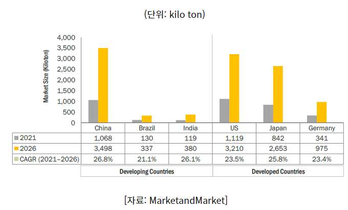
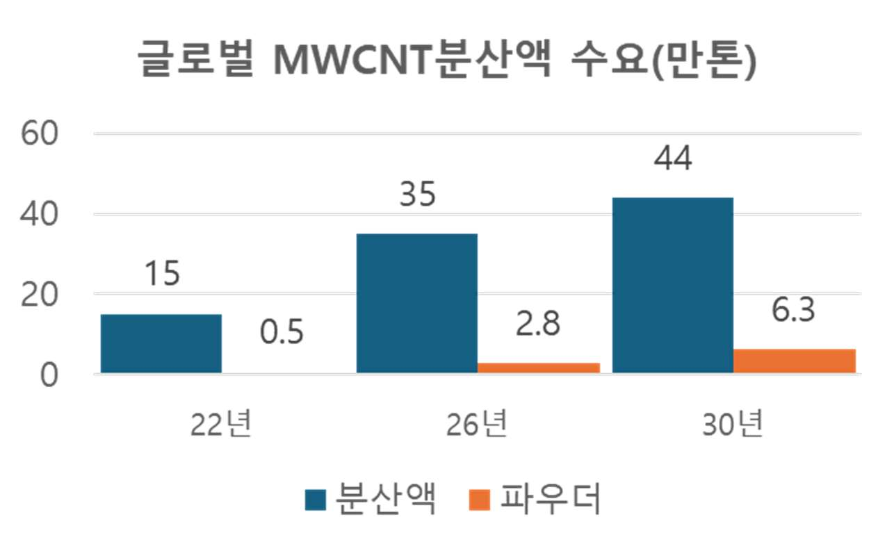
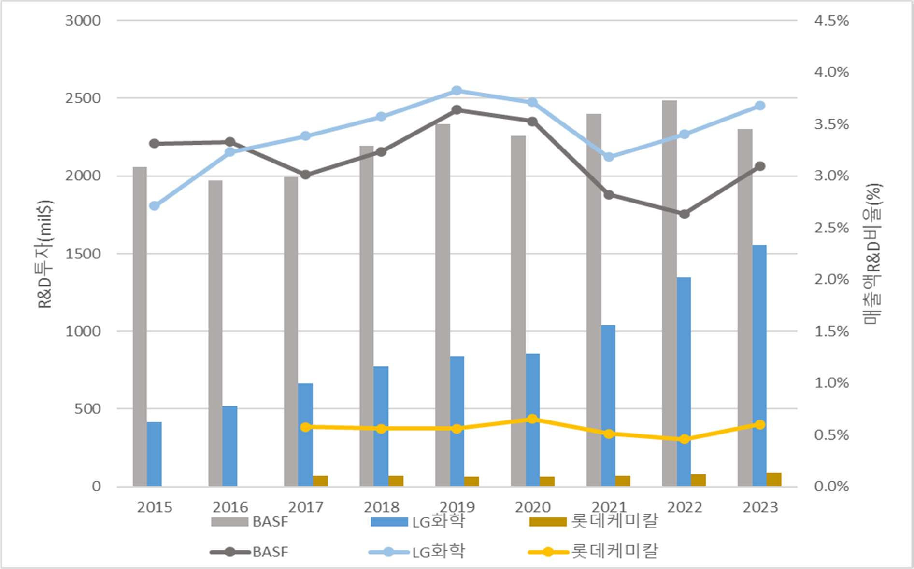
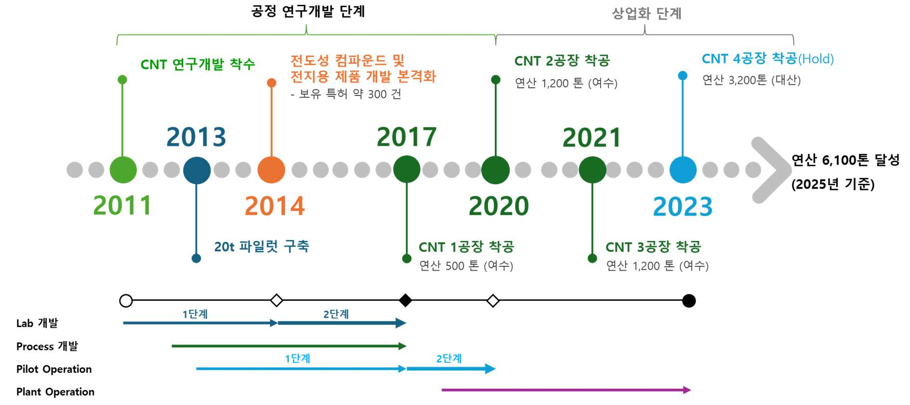

중국발 공급과잉과 세계 통상분쟁 속에 국내 석유화학산업은 기존 경영 전략으로는 생존할 수 없는 상황에 직면했다. 그런 가운데 LG화학은 2024년 C&EN이 선정하는 글로벌 화학 기업 순위에서 4위에 오르는 성과를 냈다. 본 사례연구는 LG화학의 성장 배경에 어떠한 혁신 전략과 핵심역량이 있는지, 상업화에 성공한 CNT(탄소나노튜브) 개발 사례를 통해 확인한다.
- ESG 경영과 기후 변화 대응으로 국내외 석유화학사가 친환경 소재·공정 기술 개발에 투자를 지속하는 가운데, 중국의 과잉생산과 관세 등 세계 통상분쟁이 맞물려 기존 경영 전략으로는 생존할 수 없는 상황에 직면했다.
- LG화학은 이러한 위기를 기회로 삼아 기술 혁신을 통한 지속가능한 성장을 위해 연구개발에 지속 투자했고, 그 노력은 2024년 글로벌 화학 기업 순위 4위라는 성과로 이어졌다.
- 본 연구는 이 성장 배경에 어떠한 혁신 전략과 핵심역량이 있는지, 성공적으로 상업화된 CNT 개발 사례를 통해 확인한다.
- 무기 촉매·CFD 기반 반응기·Scale-up 공정 기술이라는 핵심역량에 개방형 혁신(Open Innovation) 기반의 내부 협력 체계가 결합해 독자 공정·촉매 개발과 상업화 성공을 이끌었음을 확인했다.
- 이를 토대로 LG화학이 처한 어려운 경영환경을 타개하기 위한 R&D 기술혁신 전략을 고찰한다.
1. 서론
1.1 연구 배경
국내 석유화학산업은 대내외 경기침체로 인한 수요부족과 중국·중동의 공격적인 증설로 인한 공급과잉으로 극한 생존 경쟁에 몰려 있다. 최근에는 롯데케미칼로 인한 롯데그룹의 유동성 문제가 거론될 정도다. 이러한 상황에도 LG화학은 미국 화학협회가 발간하는 C&EN의 2024년 Top 50 Chemical Company에서 2년 연속 10위 안에 들었고, 2024년에는 전년보다 3단계 상승한 글로벌 4위에 랭크되며 국내 화학기업 중 독보적 1위를 지키고 있다. 다만 최근 2~3년간 범용 제품의 과다 공급 등으로 매출과 영업이익이 매우 나빠지고 있으며, LG화학은 이를 극복하기 위해 고부가·친환경 소재 개발을 위한 R&D 투자를 지속 추진하고 있다.
1.2 CNT 선정 배경
사례로 CNT 개발을 선정한 이유는 세 가지다. 첫째, LG화학이 추진한 R&D 과제 중 상업화(Commercialization)에 성공한 과제라는 점. 둘째, 개발 시작 시점이 2011년으로, 2010년대 LG화학이 적극 도입한 Open Innovation 제도가 잘 적용된 과제라는 점. 셋째, 2000년대 후반과 현재 LG화학의 경제적 상황이 유사하고, R&D 역할을 강조하는 분위기 속에서 고부가 소재를 개발하려는 전략의지가 비슷하다는 점이다.
1.5 연구 방법
문헌조사와 함께 CNT 개발에 참여했던 연구원·엔지니어 인터뷰를 진행했다. CNT 개발이 약 15년 전에 시작된 탓에 초창기 참여 인원을 찾기 어려워, LG화학이 출원인인 CNT 관련 특허에서 발명인으로 가장 많이 참여한 개발자 중 현 재직자를 인터뷰 대상자로 선별했고, 오프라인 2차에 걸쳐 인터뷰한 뒤 최종 응답을 대상자에게 확인받았다.
2. 이론적 배경
2.1~2.2 탄소소재 산업과 CNT
CNT는 1991년 이지마 스미오 박사가 발견한, 단층 또는 다층의 그래핀이 원통형으로 말려있는 구조의 탄소소재다. 강철보다 100배 이상 강하면서 무게는 1/6에 불과하고, 구리보다 뛰어난 전기 전도성과 다이아몬드에 준하는 열 전도성을 갖는다. 국내 탄소산업은 2020년 기준 프리미엄급 탄소소재 생산기술 부족으로 산업 가치사슬을 완성하지 못한 상태이며, 프리미엄급 피치/침상 코크스를 제조할 수 있는 회사는 미국·일본의 6개사에 불과하고 각국 정부가 기술의 해외 유출을 엄격히 금지하고 있어 해외기술 도입도 불가능하다.
2.3 CNT Market 분석
CNT 시장 규모는 2021년 기준 전세계 87억 6,309만 달러이며, 2026년까지 연평균 24.4% 성장이 전망된다. 성장 동력은 이차전지다. CNT는 우수한 전기전도성으로 양극재 도전재로서의 성능이 확인되어 있다. LG화학이 목표로 하는 시장은 MWCNT 분산액 시장으로, SNE 시장보고서('23)에 따르면 글로벌 CNT 분산액 시장은 2022년 15만톤에서 2026년 35만톤, 2030년 44만톤까지 성장할 전망이다. 중국이 65%를 차지하지만 중국 내 경쟁업체가 다수 포진해 있어, LG화학은 북미·유럽 시장을 타겟으로 하고 있다.


3. 석유화학산업의 기술혁신
3.2~3.3 석유화학산업의 R&D 특성과 기술혁신 요인
과거 논문 조사 결과, 석유화학산업은 무임승차(free ridership) 문제가 발생하기 쉽고, 신기술 최초 적용의 극심한 위험과 높은 실패 비용 때문에 "Fast Followers" 전략을 선호하며, 혁신이 개념단계에서 광범위한 상업적 단계로 진행되는 데 평균 16년이 걸리는 "Slow Clockspeed" 산업이다. 석유·가스 생산업체는 역사적으로 매출액의 평균 1% 미만을 R&D에 투자해 왔고, 제품 혁신보다 공정 혁신이 주도해 왔다. 즉 기술혁신과 다소 거리가 있는, 오래된 관습이 지배하는 산업으로 평가된다.
3.4 LG화학의 R&D 현황
LG화학의 R&D는 1979년 대덕 중앙연구소 개소로 본격화됐다. R&D 투자액은 2023년 기준 15억 달러(2조 원)로 매출액 대비 약 3.5%를 상회한다. 글로벌 석유화학산업의 평균 R&D 투자가 매출액 대비 약 1% 내외임을 감안하면 3배 이상이며, 투자 비중은 2016년 이후 세계 1위 수준인 BASF마저 상회하고 있다.

3.5 LG화학의 Open Innovation
LG화학은 2005년 말 주요 경영진의 지시로 R&D 투자효과를 높이고 연구자 간 협력을 촉진하기 위해 Open Innovation 도입을 착안했고, 2006년 'Open Innovation 추진팀'을 구성했다. i-Forum·KMS 같은 시스템을 구축하고 Tech Fair, 기술교류회(CoT)를 활성화했는데, 이는 내부 연구자 간 협력 마인드 조성과 기존의 NIH(Never Invented Here)·WKE(We Know Everything) 사고 탈피가 중요했기 때문이다. 프로젝트의 기술적 문제를 사내 인적자원으로 해결하는 'Challenge Solution 공모 제도'는 해결 방안을 제시한 연구원에게 최고 1,000만원의 상금을 지급했다. 개인 레벨 이슈는 KMS, 프로젝트 레벨 문제는 i-Forum과 Challenge Solution, 그래도 해결하지 못한 난제는 외부 Open Network System(Innocentive 등)을 활용하는 운영체계였다. 현재는 O/I 전담부서가 대외협력·투자 중심으로 운영하고 있으며, 내부 연구팀 간 협력은 조직 문화에 자연스럽게 녹아들어 시스템 없이도 활발히 진행되고 있다.
4. LG화학의 CNT 개발
4.1~4.3 개발 계기·특징·Timeline
CNT 개발의 초기 목적은 고분자 복합소재의 물성 보강용 신소재 개발이었으나, 개발 과정에서 이차전지 도전재로서의 성능이 기존 카본블랙 소재보다 뛰어나다는 점이 확인되며 이차전지 부원료의 국산화 및 SCM 다변화로 개발 목표가 변경됐다. CNT 기술의 후발 주자였던 LG화학은 R&D 기간 단축을 위해 Lab 개발과 공정기술 개발을 동시에 진행하는 Project Crashing 전략을 택했다. 2011년 연구개발 착수, 2013년 대전 기술연구원에 20톤 규모 파일럿 준공, 2017년경 공정기술 개발 완료 후 여수에 연산 500톤 규모 1공장을 착공했다. 1공장 시운전이 완료된 2020년 연산 1,200톤 규모 2공장 증설을 시작했고 1년 후 3공장 증설까지 결정했다. 기술력 없이는 수천억이 들어가는 증설 투자에 대한 결정을 할 수 없었을 것이다.

4.4 CNT 개발 주요 문제점
Project Crashing에는 대가가 따랐다. 완성되지 않은 공정을 바탕으로 파일럿 설계를 진행하다 보니 설계 변경이 빈번해 추가 비용이 발생했고, 파일럿 초기 샘플은 Lab 수준에 크게 못 미치는 성능을 보였다. 요구되는 전기전도도가 구현되지 않은 원인은 CNT가 플라스틱 소재에 원활하게 분산되지 않았기 때문으로, CNT 구조를 Entangled type에서 Bundle type으로 변경하기 위해 반응기 구조와 촉매의 개선이 필요했다. 1공장 준공 후 시생산된 CNT는 반응 Batch별 품질 편차가 크게 발생했는데, 이는 짧은 Lab 개발 기간 탓에 검증 요소 일부를 건너뛰어 생긴 문제였다. RCA(Root Cause Analysis)를 위해 그동안의 Lab 결과를 처음부터 다시 검증하는 과정이 약 5년간 진행됐다.
이 과정에서 개방형 혁신의 자산이 작동했다. 개발 목적 변경의 계기가 된 양극재 도전재 아이디어는 LG화학 Tech Fair에서 소재 특성과 개발팀의 고민을 공유한 결과 전지연구소로부터 받은 제안이었다. 파일럿 건설 단계의 문제는 기술연구원장의 리더십 하에 생산공장 엔지니어 조직과의 협업으로 조기에 해결했고, 미완성 개발 부분의 검증은 공정시뮬레이션 전문가로 구성된 공정기술 연구팀의 Challenge Solution 참여로 검증 기간을 대폭 줄였다.
4.5 주요 문제점의 해결 — 유동층 반응기와 개질 촉매
기술연구원 내 반응기 유체흐름을 전문 연구하는 CFD 연구팀과 함께 개발한 유동층 반응기는 합성된 CNT 일부를 반응기 내에 잔류시켜 유동 재료로 활용하고 촉매와 유동재료의 최적 비율을 유지하는 것이 핵심으로, 냉각/재가열이 불필요해 연속생산이 가능해졌고 운전시간과 에너지를 절감했다. 신규 촉매 전담팀과 개발한 개질 촉매는 Bundle 타입 CNT를 높은 수율로 제조하며, 촉매 담지량·소성온도·반응시간·유기산 첨가량 등 공정 변수 조합으로 CNT 벌크밀도를 10~100 kg/m³ 범위에서 정량적으로 조절할 수 있게 했다. 신규 Co-계 촉매는 기존 CNT의 Fe 원소 함유 문제를 해결해 후단 공정 단순화와 추가 비용 절감까지 달성했다.
4.6 CNT 개발 성공의 원동력
연구는 성공의 원동력을 세 가지로 압축한다. 첫째, 경영층의 Open Innovation 의지에 기반한 내부 협업 시스템 및 조직문화 구축. 둘째, 소재·공정 전문 연구인력과 실무 경험을 갖춘 생산공장 엔지니어를 아우르는 사내 전문가 Pool과 이를 활용하는 정기적 교류 문화. 셋째, 화학 소재·공정 R&D의 특성을 잘 이해하고 인내하는 연구 및 조직문화다. 특히 LG화학 경영진 일부는 R&D 경력을 갖고 있어 R&D 특성을 이해했기에 5년의 재검증 기간에도 CNT 개발 프로젝트를 지원할 수 있었다.
5. 결론 및 시사점
CNT 개발은 무기 촉매 기술, CFD 기반 반응기 개발 기술, Scale-up 공정 기술이라는 핵심 기술 역량에 개방형 혁신을 통한 내부 협력 체계가 결합해 독자 공정·촉매 개발을 가속화하고 상업화에 성공한 사례다. 2000년대 후반 도입된 Open Innovation이 내부 조직 문화 개선에 불과하다는 평가도 있지만, 개별 연구소·연구팀·생산공장의 폐쇄적 문화를 탈피해 핵심 기술 역량의 시너지를 이끌어낼 기반을 마련했다는 데 큰 의미가 있다.
- 내부 지식흐름의 활용: CNT 개발은 기업 내부의 지식흐름을 최대한 활용하여 기술혁신을 가속화함으로써 사업화에 성공한 사례다. 현재 LG화학은 외부 기술 도입, 고객 Binding을 통한 JDA·JV, License out 등 더 다양한 개방형 혁신 전략으로 확장하고 있다.
- 핵심역량이 개방형 혁신의 전제: 외부 기술을 도입하고 융합하기 위해서는 자체 기술력이 밑바탕이 되어야만 시너지 효과를 최대한 이끌어낼 수 있다. 새로운 기술(AI 등)을 이용하더라도 기업 고유의 핵심역량 없이는 그 성과를 충분히 활용하지 못한다.
- 전통적 혁신 문화의 탈피: 친환경 소재에서 Fast Follower가 아닌 First Mover로 나아가기 위한 양산 검증 투자처럼, 과거의 기술혁신 문화를 벗어난 석유화학 기업이 생존에 성공할 수 있을 것이다.
- 인내하는 R&D: 연구자의 도전정신과 Endurance, 그리고 경영진의 R&D 투자에 대한 지속적인 관심과 의지가 반드시 필요하다.